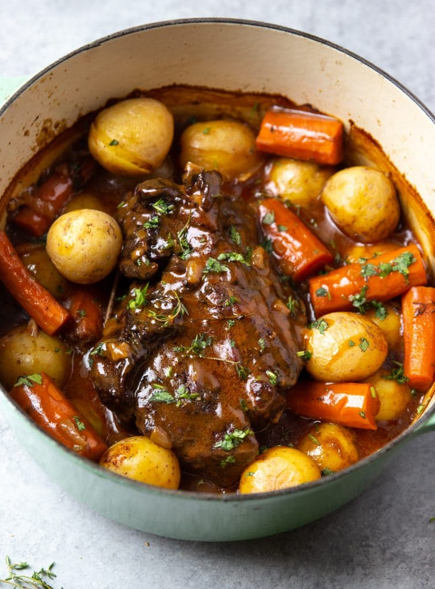

=

This classic pot roast recipe will produce comfort food that wonderful and warming! The best part about preparing a crowd-pleasing classic Sunday pot roast is that it is very easy. The proper technique, however, takes patience. The longer it cooks, the more flavorful and tender the beef becomes.
- Beef
- Yellow Potatoes
- Celery
- Carrot
- Onion
- Beef Broth
- Garlic
- Flour
- Herbs
- Red Wine
- Heat the olive oil in a dutch oven or heavy-bottomed pot over medium high heat. Add the seasoned beef and brown on all sides. Transfer to a plate.
- Add the onion and garlic to the same pot and saute until soft and translucent. Next, stir in the tomato paste and flour.
- Deglaze the pot with red wine before pouring in the beef broth, thyme, and bay leaves.
- Return the seared beef to the pot and surround it with celery, carrots and potatoes. Cover with a lid and place in a hot oven.
- Let the pot roast cook for several hours or until the beef is very tender. Scoop into bowls, garnish with parsley or cilantro, and enjoy!
Back to Homepage